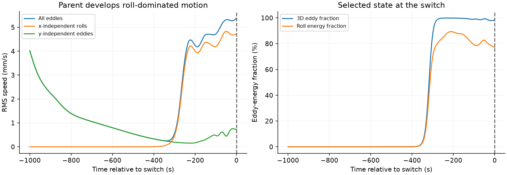

Can current bands emerge after the wind stops?
Two three-dimensional branches restart from exactly the same wave-affected turbulent state. One removes the surface stress and its compensating uniform force; the other sustains them. The Stokes drift remains unchanged. This tests the proposed sequence of forced roll production followed by organization during decay.
| Branch | Status | Verified outputs |
|---|---|---|
| wind-off | running | Awaiting verified completion |
| wind-on | queued | Awaiting verified completion |

What can we conclude?
Both branches are required before interpreting the contrast.
A new profile extremum alone is insufficient: inspect growth beyond the laminar continuation, the turbulent momentum work, available eddy energy, and whether 3D feedback weakens before organization. The matched control separates the consequence of wind removal from continued evolution. One realization cannot establish a universal regime boundary, and no binary claim is assigned automatically.
Full assessment · Frozen protocol · Branch configuration · Provenance